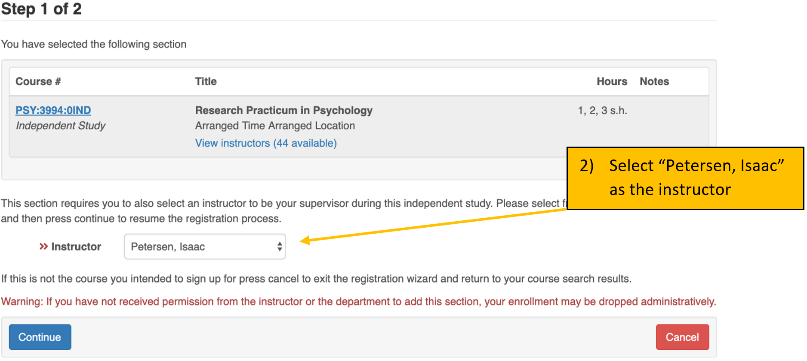

Lab Manual
1 Mission Statement
1.1 External Mission Statement
We are striving to improve the health and well-being of families and communities by conducting research to advance the understanding of human development.
Date drafted: May 2018
1.2 Internal Mission Statement
As members of the Developmental Psychopathology Lab, we strive to create, maintain, and improve a fun and collaborative culture. We commit to bettering ourselves and others through respect, hard work, ethical practices, support, and meaningful, lasting relationships. As a team, we cultivate a supportive environment for a free exchange of ideas and embrace the value of failure to foster personal and professional growth.
Date drafted: August 2018
1.3 Diversity Statement
We seek to include members of various cultural, ethnic, and socioeconomic backgrounds so that our research might best represent the families which make up our diverse communities. We aim to provide a welcoming and respectful environment for people of all backgrounds.
Date drafted: October 2020
2 Lab Glossary
- DevPsy Lab
- shorthand for Developmental Psychopathology Lab
- RA
- research assistant
- E
- experimenter
- TC
- target child, or the child participant
- PC
- primary caregiver, often a child’s parent
- coding
- the term means different things depending on the context. In our lab, we use “coding” as a shorthand to refer to “behavioral coding from video,” which involves assessing a construct from video observation to turn the video segment into numbers that can be analyzed. This is distinct from computer programming, which is another type of coding.
- RTFM
- Read the ******* manual
- RTFC
- Read the ******* checklist
3 CITI Certification
Before you can interact with any data in the lab (including observing visits) you must be certified on human subject research protocols. This means completing the CITI training, which will upload to the IRB. You will need to complete the Group 1 – Biomedical Research – IRB-01 course. Instructions are below. If you have questions, please follow this link: https://hso.research.uiowa.edu/certifications-human-subjects-protections-citi
- Enter the CITI program at https://www.citiprogram.org
- On the Main Menu screen, under the ‘University of Iowa Courses’ tab, in the ‘My Learner Tools for University of Iowa’ box, select the ‘Add a Course or Update Learner Groups’ link
- Select the “I am required to complete human subjects’ research training.” to complete the IRB required course for certification in Human Subjects Protections. Click on the ‘Next’ button.
- Select Group 1 –Biomedical Research – IRB-01. Click on the ‘Next’ button.
- On the Main Menu screen, under the ‘University of Iowa Courses’ tab, click on the title of the course to enter course.
- Click on the ‘Complete the Integrity Assurance Statement before beginning the course’ link and complete. Click on the ‘Submit’ button.
- Click on the title of the first module to begin.
- Complete all of the required modules.
When you have finished the course, please send the Lab Coordinator a PDF of the completion certificate.
If you have already completed the HSO/IRB certification, just bring/send a copy of your certification. Please note, however, that it must be Group 1 – Biomedical Research – IRB-01.
IMPORTANT: It is likely that you will receive an email from the IRB upon completion of your IRB-01 CITI training asking you to confirm your lab, PI, the study, or that you completed the correct training. This is because it is uncommon for psychology labs to complete the IRB-01 training instead of the IRB-02 training. IT IS CRUCIALLY IMPORTANT THAT YOU RESPOND TO THIS EMAIL. If you do not, it will delay our ability to add you to the IRB project, and thus delay your ability continue RA training.
The basic information they may ask you to confirm is:
Department: Psychological and Brain Sciences
PI: Dr. Isaac Petersen
Which study or training: the IRB-01 study
4 Confidentiality
As part of every participant’s consent process, we promise that we will protect their information. Therefore, it is imperative that all identifying information related to our participants remains confidential. Below are guidelines on how to handle study data and participant information.
4.1 Handling Data
All hard-copy physical research data must remain in the lab. All electronic data should be accessed from the lab, on university computers, or secure private computers. Electronic data should not be accessed on public computers. Identifiable electronic data (including visit videos) should be stored only on the lab’s RDSS share and should not be saved onto your computer.
4.2 No Talking About Participants Outside of Lab
It is important that you not talk about participants outside of lab. Even if you are talking to other RAs or people on our IRB project, you never know who else might hear your conversation. Therefore, you should never use participant names, addresses, physical descriptions, or any other personally identifying information outside of the lab space.
4.4 Remote Access
RAs should never access lab data remotely without permission or direction from the Lab Coordinator, a graduate student, or the PI. This is to ensure that the RA has received all of the requisite training, instructions, and resources to properly access data remotely. After receiving permission or direction to work on lab tasks remotely, it is critical that all team members follow these basic guidelines:
- No lab-related data or documents should be saved to your local computer
- All lab-related data or documents should only be opened when no one else can see your computer screen or hear visit videos. Therefore, if your parents/roommates/friends/etc. are in the room with you and can see or hear the videos, DO NOT OPEN THEM.
5 How to Register Lab for Credit
5.1 Regular Credit
Students who wish to receive credit for time spent in the lab may register for “PSY:3994:01IND – Research Practicum in Psychology”, “HONR:3994:01IND – Honors Research Practicum”, or “URES:3992”. Generally, students enroll in “PSY:3994” or, if they want Honors credit, “HONR:3994”.
URES:3992 is 0-hour and has no tuition or fees associated. It is recommended to enroll in URES:3992 when you cannot take credit-bearing courses (e.g., if you are getting paid, if you do not have the ability to maintain a regular schedule, etc.). URES:3992 is also useful for students in the summer so you do not have to pay the tuition and fees (which you will have to pay if you take a credit-bearing course).
Keep in mind that some courses differ in the way that they are graded.
- Students receive a letter grade (see the section on Honors Credit) for
PSY:4990andHONR:3994. - Students receive a Pass/Fail grade for
PSY:3994.
There are several advantages to registering for course credit:
- Your participation in lab will be included on your transcript, which can look good when you apply to graduate/professional school and jobs
- If you meet the hours and expectations, it can also help your GPA
- The 10 hours per week you spend in lab will be accounted for in your course schedule
 
5.2 Honors Credit
Students who wish to receive Honors credit for participation in lab may register for “HONR:3994:01IND – Honors Research Practicum”. In addition to enrolling on MyUI, you can find the Honors Research Practicum syllabus on the lab drive (to be read and signed by the RA and Dr. Petersen) here: \\lc-rs-store24.hpc.uiowa.edu\lss_itpetersen\Lab\Miscellaneous\Course Syllabi\
If you are completing an Honors project and thesis in the lab, with approval by Dr. Petersen, you may enroll for “PSY:4990 – Honors Thesis Research”. Advantages for registering for honors course credit are:
- Your work in the lab will be included on your transcript (letter graded), which can look good when apply to graduate/professional school and jobs
- The 10 hours per week you spend in lab will be accounted for in your course schedule
- The hours accumulated in the lab can count towards your honors experiential learning (up to 12 semester hours)
Interested students may be able to conduct an Honors project or non-thesis capstone for Honors in the Psychology Major. For information on conducting an Honors thesis/project, see here. Note that conducting an Honors thesis/project is not a requirement for enrolling in HONR:3994.


5.2.1 How to Fulfill the Experiential Learning Requirement for Honors Credit
HONR:3994 and PSY:3994 will appear automatically on your Honors degree audit as fulfilling part of the experiential learning requirement for Honors credit.
A student can still receive Honors credit by registering for URES:3992 or by participating in the lab on a volunteer basis without it showing on their transcript (so long as the student still completes their required 10 hours). However, these semester hours will not count toward the experiential learning requirement unless additional steps are taken.
- Complete the Pre-Experience Questionnaire before the semester begins
- Complete your lab responsibilities and engage in your 10 hours of research each week!
- Complete the Post-Experience Questionnaire after the semester ends (within the next 5 weeks)
- Submit a Narrative (within 5 weeks of semester end)
- This final project is flexible in its formatting, but an essay (the typical choice) should be 500–1,000 words in length. This will allow you to reflect on your experiences and how you grew. A couple images, an author bio, and highlights of your experience are all required components of this piece.
- https://uiowa.qualtrics.com/jfe/form/SV_cDaXMAsEr3pHY57
More information on the Honors experiential learning process for research involvement can be found here: https://honors.uiowa.edu/requirements/experiential-learning
6 RA Roles
The Developmental Psychopathology Lab uses a “generalist with specialization” approach—there are some tasks that all RAs are trained to perform, and there are other tasks that RAs specialize in. We have three specialized tracks or roles that RAs can train in after completing basic lab training: Behavioral Testing Specialist, Electroencephalography (EEG) Specialist, and Data Specialist. Every role is important. Placement in these roles depends on each RA’s (a) interests, (b) aptitude, and (c) fit, in addition to (d) the team’s needs. We take into consideration the desired placement of every RA, but ultimately Dr. Petersen and the Lab Coordinator make this determination based on a, b, c, and d from above.
Below are cross-cutting responsibilities that all RAs are expected to contribute to.
Cross-Cutting Responsibilities
- data entry
- coding behavioral tasks from video
- keeping lab clean and family- and child-friendly
- quality control and improvement
- helping run visits
- updating/editing coding manual as needed
- auditing “Question and Answer” (Q&A) and “Quality Control Improvement” (QCI) documents
- providing answers to coding questions when applicable
6.1 Specialized Roles
6.1.1 Behavioral Testing Specialist
Below are necessary characteristics and potential responsibilities for Behavioral Testing Specialists:
Necessary Characteristics:
- works well with 3–7-year-old children and parents
- positive and cheerful attitude
- mature
- able to quickly and easily soothe upset children
- able to stay calm and composed in the face of pressure
- able to follow a script with adherence yet flexibility to tailor it to the individual child (based on the child’s age, interests, intellectual capacity, etc.)
- able to take feedback non-defensively and learn from feedback
- confidence to remain in control of a chaotic environment
Responsibilities Could Include:
- serving as an experimenter (E) for behavioral testing (lab visit 1; LV1) visits
- training new LV1 Es
- assuring procedural adherence for LV1 (including coaching RA and Camera roles, collaborating with other Es to ensure consistent administration)
- editing/updating LV1 manual procedures and scripts as needed
- keeping LV1 observation room stocked and prepped for visits
- having a lighter focus on coding
6.1.2 EEG Specialist
Below are necessary characteristics and potential responsibilities for EEG Specialists:
Necessary Characteristics:
- technical skills
- attention to detail
- confidence to remain in control of a chaotic environment
- comfortable trouble-shooting issues with technical equipment (after receiving extensive training); ability to follow strict procedures and guidelines
- works well with 3–7-year-old children and parents
- mature
Responsibilities Could Include:
- serving as an E for EEG (lab visit 2; LV2) visits
- training new LV2 Es
- assuring procedural adherence for LV2 (including coaching RA roles, collaborating with other Es to trouble-shoot technical issues and assure procedural adherence)
- editing/updating LV2 manual procedures and scripts as needed
6.1.3 Data Specialist
Below are necessary characteristics and potential responsibilities for Data Specialists:
Necessary Characteristics:
- professional communication skills
- knows the study well (able to describe the study and consent form thoroughly, can answer questions about the study)
- able to interact well with people in the community for purposes of making connections with schools/preschools/daycares for recruitment
- highly organized
- attention to detail
- technical skills
- creative for developing recruitment and retention tools and discovering recruitment sources
- comfortable in connecting with diverse people in diverse places
Responsibilities Could Include:
- heavier focus on coding, coding tasks with advanced programs (e.g., Datavyu)
- REDCap additions and edits (upon completion of advanced REDCap training)
- train new RAs in LV1 RA and Camera roles, and LV2 RA roles
- help run visits in RA and Camera roles
- recruitment and retention, including helping to develop/improve current recruitment and retention systems and devising new recruitment and retention possibilities, updating social media pages
- helping to develop new coding systems
7 RA Advancement in Lab
The DevPsy lab is happy to offer exceptional RAs the opportunity to gain advanced research experience in the form of leadership roles within the lab. Eligibility is at the discretion of the Lab Coordinator and Dr. Petersen.
7.1 Eligibility Criteria
Below are the eligibility criteria for advancement in lab:
- Has been an active and engaged RA for at least 4 full semesters
- Has shown a personal interest in the research being conducted in lab/research in general
- Meaningful and engaging research and leadership opportunities can be helpful in building a CV and research background, but it also can involve considerable work and responsibility. Therefore, prospective Advanced RAs should be self-motivated and have consistently shown that they are reliable and capable of additional responsibility.
7.2 I meet the criteria, what should I do next?
After you have met all the criteria and feel that you are ready to pursue this opportunity, it is your responsibility to set up a meeting with the Lab Coordinator and Dr. Petersen, and to determine what types of responsibilities and projects you would like to lead. You should be prepared to come to this meeting with a thought-out idea of what projects and roles you are interested in given these new responsibilities and privileges.
7.3 Potential Advanced Roles
Some advanced roles that can be pursued include (but are not limited to):
If you are already a Behavior Testing Specialist and want to pursue further advancement to become an Advanced Behavior Testing Specialist:
- Lead E: training, supervising, quality control (procedural and data audits) for LV1
If you are already an EEG Specialist and want to pursue further advancement to become an Advanced EEG Specialist:
- Lead E: training, supervising, quality control (procedural and data audits) for LV2
- Preliminary help with data analyses and data processing (e.g., EEG data)
If you are already a Data Specialist and want to pursue further advancement to become an Advanced Data Specialist:
- Advanced coding responsibilities, including Datavyu coding, helping develop new coding systems for tasks not currently being coded, etc.
- If you wish to be trained on Datavyu coding, you must commit to staying in lab at least an additional 3 semesters from when training begins.
- In charge of recruitment and retention events/opportunities
- Coming up with new ideas and systems for implementation
- Contacting organizations to coordinate recruitment
- Social media, postcards, newsletter, holiday cards, diplomas
7.4 Benefits of Assuming an Advanced Role
Research works for your CV: One of the major perks of this role is that you may be able to pursue a written piece of research (paper, poster, conference presentation, etc.) that can be a great boost for your CV!
Collaborative research projects in the lab: This can take many forms (e.g., poster, paper). You are encouraged to ask a current advanced RA, a graduate student in the lab, the Lab Coordinator, and/or Dr. Petersen about what this may entail.
Reduced availability expectation: advanced RAs are expected to make themselves available 1 night per week & 5 weekend days per semester to train/coach new experimenters/run visits (when needed).
Registering for Advanced Research Practicum in Psychology (PSY:3995): if the RA’s role includes advanced participation in lab-related research projects in such a way that includes significant reading and writing (such as when performing an independent research project), the RA may register for PSY:3995: “Advanced Research Practicum in Psychology”. However, RAs should seek permission from Dr. Petersen before enrolling in PSY:3995.
7.5 A Note About Other Opportunities for Advancement
In addition to opportunities for advancement in lab, there may also be opportunities to conduct independent research projects, to conduct an Honors project/thesis, or to contribute to papers, grants, or conference poster presentations. An important part of professional development is learning to advocate for yourself and to inquire about opportunities that are available. If you are interested in gaining experience in a certain area of lab work, taking on a leadership role, or if you are interested in an opportunity to take on a more advanced role in the project, just ask! There may be opportunities available for RAs to gain experience in specialized areas of lab work (e.g., recruitment of participants, data processing) or even to earn authorship on a paper or poster for an ongoing project. If you are motivated to gain these kinds of opportunities, you are welcome to ask and see what may be available. Advanced projects are given priority to RAs who have shown reliability and commitment.
7.6 A Note About Lab Hours for Advanced Tasks
As mentioned above, there are a number of opportunities to gain advanced experiences in the lab. There may be an opportunity for some experiences to count for lab hours if:
- The project is assigned to the RA
- The project benefits the overall lab
- The RA has demonstrated proficiency in the skills needed to complete the project
- The project is not part of an Honors project/thesis, or another independent research experience
For example, our lab leverages R for a variety of tasks. RAs may be able to use R to complete lab projects if they take the time outside of lab hours to tackle the learning curve of R. Furthermore, RAs may have an opportunity to learn how EEG data is processed. These expectations are not meant to discourage RAs from pursuing advanced experiences, but to set expectations for how these experiences can (or in other cases cannot) count for lab hours. However, even if experiences do not count toward lab hours, they are still valuable learning experiences that can advance your professional development in pursuit of your career goals. If you would like to learn more about either of these opportunities, or any others, please reach out to the Lab Coordinator.
7.7 Honors Theses/Projects
For information on conducting an Honors Thesis/Project, see here.
8 Lab Buddy System
Our buddy system is a knowledge-sharing method that we use when onboarding new RAs into the lab. Each new RA is paired up with an existing RA who will guide them through their first weeks in their new role. The exchange of information goes both ways. New RAs are encouraged to share tips, knowledge, and techniques from previous experiences, while the existing RAs makes sure that new lab members feel welcome. Senior RAs are expected to reach out to their lab buddy at least twice a semester to check in on the junior RAs progress in lab.
During their first weeks, new RAs can feel very overwhelmed and lost, because they are presented with considerable new information in a short amount of time. Although new RAs typically have the essential skills and interests to succeed in the lab, they are unfamiliar with the work culture, the lab processes, and “unspoken rules1.” While the coding team teaches the RA the coding and entry skills, a lab buddy helps a new RA to ease their transition during the orientation phase and provides guidance and advice in a more informal setting. The goal of the buddy system is that new RAs feel welcome and have someone in the lab they can connect with. New RAs should be introduced to their buddy at the end of their orientation session.
9 Scheduling
9.1 Scheduling System Overview
After course registration at the end of each semester, RAs are to submit their course schedules for the following semester to the Lab Coordinator. If an RA has a strict, set work schedule, this can be included with the course schedule. We will do our best to accommodate work schedules; however, classes (including lab) take precedence over work schedules. The Lab Coordinator will review everyone’s individual schedules and create a lab schedule that best allows visits to be scheduled, while respecting RA course schedules and—as best as possible—other responsibilities. Once the Lab Coordinator has finalized the lab schedule for the semester, they will email each RA their weekly lab schedule. This weekly lab schedule consists of 10 total hours per week. This includes 9 weekly hours of lab time, during which RAs may run visits, help with recruitment, complete data entry and coding tasks, assist the Lab Coordinator with assigned tasks, etc. Additionally, all RAs are expected to attend a one-hour lab meeting every week when the entire team assembles to discuss lab-related issues and science. Once the semester schedules have been sent out to all RAs, it is expected that RAs schedule other events around their scheduled lab hours to the best of their availability (i.e., there are no major schedule changes that would impact an RA’s scheduled lab hours for the semester).
By the first day of the new semester, RAs are expected to submit to the Lab Coordinator their standard weekly availability. This should include all normally occurring weekly availability during which the Lab Coordinator can schedule them to run visits that occur outside of an RA’s normal lab hours. This availability schedule should include at least two available weekday evenings (M–F) per week. The Lab Coordinator will keep a composite schedule of RA weekly availability to use in scheduling visits when additional coverage is needed beyond RA lab schedules. If an RA is scheduled to run a visit during their availability but outside of their normal lab hours, the RA will be notified of the visit details via an invitation to the Outlook calendar event, but the Lab Coordinator will not reach out to them before scheduling to confirm their availability. The RA is expected to accept the invitation to the calendar event in Outlook.
If scheduling commitments come up throughout the semester during any time that an RA submitted as part of their weekly availability, they are responsible for adding it to the shared Outlook “Busy Calendar” (RES-DPL-Busy) so that the Lab Coordinator knows not to schedule them. It is acceptable for an RA’s available evenings to vary week to week, but all RAs are expected to maintain at least two available evenings every week. RAs are responsible for any visit they may be scheduled to run during the availability they provide at the beginning of the semester. Therefore, it is imperative that all appointments and events that occur during their normal weekly availability are shared with the Lab Coordinator via the “Busy Calendar” as soon as possible.
If an RA has been scheduled for a visit during their availability (including available time on weekdays, available evenings, and chosen weekend days), has been notified of this visit, and cannot run the visit due to an unexpected conflict, the RA is responsible for posting on the #scheduling channel on Discord to ask for a cover. It is the RA’s responsibility to let the Lab Coordinator know who will cover the visit. If unable to find a cover, it is the RA’s responsibility to let the Lab Coordinator know by at least 48 hours before the visit.
For information regarding weekend visits, please refer to the section regarding the Weekend On-Call Schedule.
For general information regarding the scheduling expectations for undergraduate RAs of the Developmental Psychopathology Lab, please refer to the section on Scheduling Expectations.
9.2 Weekend On-Call Schedule
9.2.1 Introduction
To ensure that the coverage responsibility for visits scheduled outside of normal lab hours is shared equally among all lab members, RAs are expected to sign up for at least 8 weekend days each semester when they will be “on-call”. Please note, this does not mean that you will be expected to come into lab for every day you sign up. This does mean that if a visit needs to be scheduled on a weekend day, the Lab Coordinator may schedule you to help run that visit without first contacting you to ask if you are available.
You are expected to stay available to run visits on the days you are signed up for until 24 hours prior. The Lab Coordinator will not automatically schedule you for a weekend or evening visit without 24 hours’ notice to lab members. The Lab Coordinator may request volunteers to run visits that are scheduled “last minute” (i.e., within 24 hours), but you are not expected to be available for “last-minute” visits unless they occur during your scheduled lab hours. If a weekend visit is scheduled and you are on-call that day, the Lab Coordinator will tag you in a Discord with the details of the visit.
If you can no longer help run a visit you have been scheduled for, it is your responsibility to find another RA to trade with you. Ultimately everyone is expected to be on-call for at least 8 weekend days per semester (apart from Advanced Specialists; see the section on RA Advancement).
9.2.2 Preparation
To ensure the process is as efficient as possible, please bring your calendar with your weekend availability for the semester. Bring a written list of the weekend days you cannot be on-call for that semester.
9.2.3 Procedure
- The Lab Coordinator will set up separate meetings with behavioral testing specialists, EEG testing specialists, and data specialists/new RAs during the first week of the semester. At these meetings, the Lab Coordinator will conduct the weekend scheduling.
- Everyone draws a number.
- Pass the sign-up sheet around your group from lowest number to highest number, and every RA will sign up for one day per turn. Each round, the order reverses (i.e., snake order). That is, whoever gets the first pick in round 1 gets the last pick in round 2. Continue this process to sign up for days until everyone has signed up for at least 8 days each. Note that this may mean signing up for a day that you are unavailable (in order to sign up for 8 days).
- Data Specialists and new RAs will sign up for RA slots—the Lab Coordinator will schedule RA and Camera roles interchangeably (i.e. RAs will be randomly assigned either a Camera or RA role by the Lab Coordinator).
- Trained returning RAs (Behavioral Testing Specialists, EEG Specialists, and Data Specialists) should prioritize signing up for visits earlier in the semester first, if possible. When the new RAs complete training for visit roles, they will be able to help with visits later in the semester.
- After everyone has signed up for 8 days, RAs will have an opportunity to trade days with each other (see below).
- Once this process is complete, the sign-up form will be kept in the Lab Coordinator’s office and remain there for one week. During this one week, RAs will have the opportunity to make any final adjustments necessary (i.e., trade days with other RAs). RAs must notify the Lab Coordinator of any trades/changes to their weekend sign ups within this week. Remember, at the end of the one week, everyone should still be signed up for a total of 8 days, and everyone will be responsible for helping run any visits that may be scheduled on those days.
9.4 TimeClock
OpenTimeClock2008 is the program we use for keeping track of RA lab hours. Each RA is expected to clock in before beginning lab-related work (including running visits, but if you come in early to each lunch, visit with other RAs, or anything else NOT lab work-related, then do not clock in until you are ready to work), and to clock out when they have stopped lab-related work (e.g., if you leave to get lunch, please clock out then clock back in again when you return to work). The Lab Coordinator will add you to the system using your HawkID. To set up your profile the first time you use the program, follow the steps below:
- Click the TimeClock shortcut on your lab computer desktop (or go to https://www.opentimeclock.com/2008/free.html).
- In the “Company Name” textbox, type
devpsylaband click the blue “Sign In” button - Enter your
HawkIDin the “Username” field and click the “Login” button. - Go to “My settings” at the top of the page.
- Check the “Change password” box, and create a new password in the subsequent boxes (i.e., “Current password” which can be left blank as you will not have a password until you set one up for yourself, “New password,” and “Confirm new password”). Then click the “Save” button.
NOTE: If a pop-up window appears asking if the website can have permission to access your location, be sure to click yes or accept. TimeClock login is GPS-restricted, so the program may not work if it is not allowed to verify your location.
To use this program to view your current hours for the semester:
- Login to your account and click on “List view” at the top of the page.
- Filter your days worked by adjusting the dates at the top left of the screen to encompass the current semester (either by typing in the relevant dates, or by using the dropdown calendars by clicking the calendar icons).
- Once you have selected the target timeframe, look at the top right-hand side of the screen above the table. There, you will find text that reads “total hours,” and should list your total time clocked-in in hours and minutes. If you are unsure of how many total hours you need for a semester, ask the Lab Coordinator.
10 The Basics of Lab
10.1 Lab Meetings
Lab meetings will take place once per week at a pre-determined time. The Lab Coordinator will choose the weekly lab meeting time based on everyone’s schedules and will try to schedule the meeting for a time when all lab members are available. Lab meeting is the most important time that the team has together every week, because it is the only time that everyone is present, and it helps everyone stay on the same page as part of working as a team. Attending lab meeting is mandatory.
The lab meeting is generally divided into two sections:
- The first 15–30 minutes of the meeting is reserved for lab announcements, as well as any updates or questions about the study. If you have questions or suggestions, please raise them.
- The second half of the meeting is reserved for an article discussion or a professional development workshop.
10.1.1 Article Discussion
Each lab meeting (with the exception of the meetings reserved for professional development workshops), an RA is expected to lead the discussion of a peer-reviewed, empirical research article of their choosing that is related to the interests (broadly defined) of the Developmental Psychopathology Lab. Article discussions serve several purposes:
- in the spirit of getting course credit for lab experience, article discussions provide a seminar forum for learning about science
- article discussions help students connect the work they are conducting in the lab to the broader scientific field
- they help students gain greater skill in reading and critiquing scientific articles, which helps people be more critical consumers of information in society
- they provide a space to explore scientific ideas and the potential practical implications of science
- they provide opportunities to gain skill in leading a discussion, which is an important public-speaking skill
- they provide opportunities in learning to digest complex concepts and to communicate them in a way that is understandable and relevant to others
- they provide a nonjudgmental space to get out of your comfort zone and to grow intellectually and professionally
RAs will sign up to lead discussion of an article during the first lab meeting of the semester (new RAs may sign up for lab article discussion during their orientation). The list of those who will be presenting and when they will presenting can be found on the lab schedule that is shared via OneDrive. If there are fewer days available than there are RAs, priority is given to newer RAs or to RAs who have had fewer opportunities to lead the discussion of an article. All lab members are expected to contribute to each discussion.
By Monday of the week the article will be discussed, the RA picking the article should post 1) the article PDF (the actual PDF file of the article, not the URL link to the PDF) and 2) the full APA-style reference in the #lab-meetings channel on Discord. For more information on how to find and access articles, see here. For more information on APA formatting, see the resources on the lab drive: \\lc-rs-store24.hpc.uiowa.edu\lss_itpetersen\Lab\Miscellaneous\Professional Development\General ProfDev Materials\APA Formatting\
The RA who is leading the discussion of the article should structure the discussion following the format below:
- Provide a brief explanation of why you chose the article.
- Present a brief summary (~2–3 minutes) of the article’s main points (it is not a book report!), in which you describe the study and its key findings.
- Spend the majority of the time (~20–25 minutes) posing questions to elicit discussion. The questions should not be too vague (e.g., do not ask “What did you think of the methods?”), but instead should be specific and aim to elicit an interesting and critical discussion. You can also mention critiques you have, but keep it as question-oriented as possible to elicit discussion.
- Save time (~10 minutes) for big-picture questions pertaining to the implications of the findings for science/practice/policy/life, etc.
10.1.2 Lab Meeting Scribe
An RA will be designated (usually on a volunteer basis) each semester to be the lab meeting scribe. The scribe is responsible for taking notes throughout the meeting. The scribe also sends a brief summary of the important information from the meeting to the entire team via the #lab-meetings channel in Discord after the lab meeting has ended. The scribe also adds the summary to the “Lab Meeting Agendas – Team” in the lab’s OneDrive.
10.1.3 Attendance and Absence Policies
All members of the team are expected to attend every lab meeting. If an RA is unable to attend a meeting, they are responsible for letting the Lab Coordinator know as far in advance as possible so that the Lab Coordinator can work with the RA to arrange how they will make up the time. They are also responsible for emailing several detailed questions or comments on the article to the presenting student AND to the lab email (devpsy-lab@uiowa.edu) by the day before the meeting to help contribute to the discussion. If advanced notice is not possible, contact the Lab Coordinator as soon as you are able to and explain the absence. The RA is also responsible for reading the lab meeting agenda and summary notes after the meeting to learn what they missed.
10.2 Lab Communication
Forms of lab communication are described below. Please use Discord for as much communication as possible! Keeping lab-related communication on Discord helps our team work most effectively and efficiently, and it saves time for the Lab Coordinator, Dr. Petersen, and your team members because it allows other RAs to answer questions and allows people to jump in to provide corrective feedback, as necessary.
- Non-private lab-related communication (almost all communication)
- Use Discord
- See the Discord Checklist
- Feel free to send messages and you can notify particular people if the message is for particular people (@isaac-petersen).
- You can send pictures and attachments in Discord by using the plus sign next to the message.
- Discord communication can be informal! We want it to be a fun place to communicate and chat with the team. Feel free to post memes, set up lab-wide social gatherings, etc.
- Use Discord
- Private lab-related communication
- Send to: devpsy-lab@uiowa.edu
- Examples: Sending your course schedule for the upcoming semester, notifying the Lab Coordinator of an absence due to personal reasons/illness, requesting changes to your schedule, asking the Lab Coordinator for a reference, responding to an email that the Lab Coordinator sent to you.
- Send to: devpsy-lab@uiowa.edu
- Communication directed specifically to Dr. Petersen rather than to the lab (e.g., to set up a meeting to discuss career goals, honors projects, etc.)
- Send email to Dr. Petersen
- Communication directed to the past members of the lab (e.g., to setup a social gathering)
- Use Facebook
- See the Social Media Checklist
- Use Facebook
- Communication directed to the public (e.g., to communicate results from a published study)
- Use Twitter and Instagram
- See the Social Media Checklist
- Use Twitter and Instagram
10.2.1 Resolving Conflicts and Personnel Issues
It is inappropriate and unprofessional to gossip about lab personnel (i.e., complaining about someone behind their back to other RAs). If someone gossips to you about concerns/conflicts/complaints with lab personnel, please ask them to deal with the person directly, or to address the issue directly with the chain of command (see below).
If the conflict/personnel issue is with a peer, the first step is to attempt to address the problem with your peer directly. If the conflict/personnel issue is with a peer, and you are unable to resolve the problem or you feel that this first step would be too difficult or uncomfortable for you, then please bring this to the attention of your direct supervisor (graduate student, postdoctoral student, or Lab Coordinator). If the conflict/personnel issue is with your direct supervisor and you are unable to resolve the problem or you feel that this first step would be too difficult or uncomfortable for you, then please bring this to the attention of your main supervisor (Dr. Petersen). Please express personnel concerns directly (in person or by email). Do not put personnel grievances in lab reports. We encourage you to express concerns to the chain of command if you feel the issues impair your or the team’s functioning.
10.2.2 Discord
10.2.2.1 Getting Started
- Download the “Discord” App to your mobile phone (it is free!)
- You can also access Discord on any internet browser (https://discord.com): https://discord.com/channels/@me
- If you do not already have a Discord account, create a Discord account with a password you will remember. You can use either your university email address or a non-university email address. However, regardless of which email you use, make sure that your notifications are set up so that you will receive notifications for lab-related messages.
- Open the Discord server for the Developmental Psychopathology Lab (Dr. Petersen or the Lab Coordinator should have added you to the workspace prior to your start in lab as part of your onboarding).
- Make sure to add yourself to all the following “Channels”
#announcements#coding-scoring#data-entry#data-specialist#good-news#irb#lab-admin#lab-design#lab-meetings#measures#opportunities#procedures#quotes#random#recruitment#research#redcap#scheduling#visits#website-socialmedia#wiki
10.2.2.2 How/When to Use
- Channels: All channels are a certain category or topic of conversation so that it is easier to locate previous discussions relevant to that topic
- To notify specific people in your message, type “@” and then enter in their username before typing your message (usernames are located on the left side of the screen)
@everyonenotifies everyone (only admins can use)@channelnotifies everyone in the channel
#random: Use this channel if you are running late to lab, or if you have a question or comment that does not fall within the other channel categories; can also put memes or random funny things here!
- To notify specific people in your message, type “@” and then enter in their username before typing your message (usernames are located on the left side of the screen)
- Attachments: Send pictures and attachments by clicking the plus sign next to the message
- Direct Messages: Do not use direct messages or private threads in Discord. All Discord communication should be in team-facing channels so others can benefit from the information and so we can go back and reference it later. If you need to communicate privately with the Lab Coordinator or Dr. Petersen, please use email (see the section on Lab Communication for more information)
Discord channels are meant to organize conversations within broad overarching topics, but within each channel we want diverse conversation to span the gamut of each topic. For example, the #coding channel should include conversations ranging from discrepancies between two coders on a given task, to technical discussions about Datavyu, to general questions to the Lab Coordinator and Dr. Petersen about the constructs measured in a given task, to all of the procedures, systems, and programs in between. Think of each channel as a “theme” rather than a specific “topic of conversation.” You should simply choose the channel that seems most relevant to the question or comment you want to share and have at it! It is important to remember that, even though different team members are assigned different tasks within the lab, it does not mean that it is any less important for the whole team to stay informed about the general projects of the lab. We are all collaborating on the same project, on the same team, and working toward the same general goals.
10.2.3 Notion
Notion is a shared project management and note-taking workspace. The primary purpose of our Notion board is to have a shared space to organize ongoing coding, scoring, and entry tasks.
Expected Use:
- Coding and scoring teams should use the
Coding,Entry, orScoringteamspaces to keep track of videos that are actively being coded - RAs should keep track of comments and questions to be referenced during coding team meetings
Optional Use:
- RAs may use the
Personal Tasksteamspace to keep track of their own to-do list related to lab work - RAs may choose to keep track of their training progress in the
Training Progressteamspace
10.3 Lab Documentation
We strive to maintain accurate, detailed, and step-by-step manuals or checklists for all lab procedures. Written documentation is important for many reasons, including that it facilitates training, reduces the likelihood of human error, allows us to share our processes with others, and increases replicability. If we are missing written documentation for something, please let us know and help us create a manual or checklist!
Just as important as creating written documentation is using it! Checklists to remind surgeons to wash their hands significantly reduce infection rates (archived at https://perma.cc/4Q62-ER5T); we are doing much more complicated work than washing hands, so it is crucial to follow our manuals and checklists. When you are training in a new procedure, do not rely just on what other RAs tell you. Despite their best efforts to help you, RAs may sometimes describe procedures incorrectly to you, and it is important to follow what is in the manual. If something is missing, incorrect, or out-of-date in the manual, please let us know so we can fix it.
10.4 Lab OneDrive
We have an online folder shared with the team through Office 365 OneDrive. In order to access this folder, you have to first be granted permission by Dr. Petersen or the Lab Coordinator (which should happen as part of your onboarding when you first join the lab). Once you have permission, you can access the folder here: https://iowa-my.sharepoint.com/personal/itpetersen_uiowa_edu/_layouts/15/onedrive.aspx?id=%2Fpersonal%2Fitpetersen%5Fuiowa%5Fedu%2FDocuments%2FResearch%2FLab%2FOneDrive
This folder contains three subfolders:
- “For RA Edit”: The documents in this folder allow for editing by all team members. This folder includes:
Lab Meeting Agendas – Team.docx: This is the running agenda for our weekly lab meetings. Every week, the lab scribe will add detailed meeting notes to this documentLab Meeting Article Sign-Up.docx: This document is used by every RA at the beginning of every semester to sign up for the day they lead the article discussion. RAs can then access it throughout the semester to check which day they are scheduled to present on, but should not alter their sign-up day without first obtaining permission from the Lab CoordinatorTask Timing Sheet.xlsx: This Excel document is used by all RAs to record their coding progress (seeCoding Manualfor more information)
- “For RA View”: The documents in this folder allow for read-only access by all team members.
- “Lab Reports”: This is where you should save your bi-weekly lab reports throughout the semester. Lab report folders can only be accessed by the RA who owns it, the Lab Coordinator, and Dr. Petersen. Each lab report folder has a subfolder named “Past Lab Reports_HawkID” which should be used to archive old lab reports—in other words, every time you save a new lab report to your root lab report folder, you should move the previous one to the “Past Lab Reports_HawkID” folder.
10.5 Lab Drive
#1 Rule: Never delete any documents or data without explicit permission from the Lab Coordinator, graduate students, or Dr. Petersen first.
#2 Rule: If you accidentally delete or move documents, folders, etc., contact the Lab Coordinator, graduate students, or Dr. Petersen IMMEDIATELY. We are able to recover deleted items for up to 4 months.
If there is an old or outdated document, like an outdated checklist or an old coding form that has since been re-coded, do not delete it. You may move it to an “00-Old” folder (see Folder Designations below), or, if you are unsure where it should be saved, consult your fellow lab members or the Lab Coordinator.
10.5.1 File Naming Conventions
Because the Lab Drive contains so many files across so many different tasks, TCs, and areas of the research process, it is imperative that all files are carefully named following a descriptive, standardized naming convention. All file names should be ALL lowercase, except when using the following established lab abbreviations: LV1/2, or T1/2/3/4, or TC/PC/PP/SC.
- For visit-related files in “Coding”, “Entry”, and “Payment” folders, the file name should include:
TCID,wave, and task/document type (e.g.,1000_36_consent). - For files within “Coded Data”, coding form files should also include which coder the form is from (e.g.,
1000_36_grasssnow_coder1). - For files within “Scoring”, scoring form files should also include which scorer the form is from (e.g.,
1000_36_maps_scorer1). - For visit-related files within “Payments”, file names should also indicate which visit or caregiver the receipt is from (e.g.,
1000_36_receipt_LV1,1000_36_W9_SC). - Any IRB documents in the IRB folder (
\\lc-rs-store24.hpc.uiowa.edu\lss_itpetersen\Lab\Studies\School Readiness Study\IRB\) that are stamped with an expiration date (e.g., recruitment materials, consents) should also indicate the year in which they are valid (e.g.,informedconsent_2018). When these materials expire, they can be moved to the “00-Old” folder within the relevant parent folder.
10.5.2 Folder Designations
Old: This file designation is used to store versions of documents that are outdated—this applies both to previous versions of active, updated documents as well as documents that are no longer in use.
Admin: This file designation is used to store miscellaneous admin-related documents (e.g., spreadsheets, checklists, etc.) that cannot logically be placed in another folder within the same parent folder. These folders are not meant to be a “junk drawer” to deposit new files, rather they are a clearly identifiable home for important files that do not have another obvious home, so they are not loose in a parent folder. If new documents are created that could logically be paired with a document in a 01-Admin folder, then do create a new folder and move the related file from 01-Admin into the new folder with its related documents. If a new folder needs to be created, contact the Lab Coordinator.
A Note About Creating New Folders:
The RA should ask the Lab Coordinator, Dr. Petersen, and graduate students before creating a new folder within the Lab Drive. RAs are able to create new TCID folders in their check data folders of their coding or entry task, as well as any new folders within their personal folder on the drive.
10.5.3 RA Folders
For every RA who joins the lab, we create two folders that are only theirs to use: their member folder and their lab report folder. Member folders and lab report folders are named using the RA’s HawkID.
10.5.4 Member Folders
Member folders can be found on the lab drive here: \\lc-rs-store24.hpc.uiowa.edu\lss_itpetersen\Lab\Members\
Member folders should be used for any lab-related work (excluding lab reports). They can be accessed by anyone in lab, including other RAs, so it is not advisable to save any personal or confidential documents within a member folder. However, if you ever work on a lab-related project (e.g., recruitment material, helping to develop a new task or coding system, etc.) any relevant documents should be saved in your member folder. When RAs graduate from the lab, these folders are archived so if we ever need to go back and find documents used in previous projects we have them saved.
10.5.5 Lab Drive Directory—Frequently Used Folders
| Members | Individual RA files, by HawkID | ||
| Miscellaneous | Professional Development | ||
| RAs | RA Lab Hours | Folders are broken down by Semester and Year, and include RA Lab, Availability, and Weekend On-Call Schedules | |
| RA Task Assignments | Folders are broken down by Semester and Year, and include Coding, EntryCheck, and Lab Cleaning Schedules | ||
| Studies | School Readiness Study | Coding | |
| Data | |||
| IRB | |||
| Payment | |||
| Procedures | |||
| Recruitment | |||
| Scoring | |||
| Videos | |||
| Training | Orientation | Checklists | |
| REDCap | Videos | ||
| PDF text versions of video training information, by topic | |||
| Website | Photos | Banner | |
| Pictures | |||
| Tabs |
10.5.6 Google Drive
Sometimes, the lab creates documents in Google Drive for purposes such as sharing, professional development workshops, etc. So the lab retains access to these documents, please transfer ownership to Dr. Petersen when creating them. To transfer ownership, right click the document, click “Share”, add Dr. Petersen (isaactpetersen@gmail.com), and select “Transfer Ownership.”
10.6 Lab Access / Keys
Sometimes when visits occur outside of normal lab hours (M–F, 9AM–5PM), the Lab Coordinator is unable to be present to open lab or lock up. In these situations, it is permissible for RAs to open or close the lab on their own (provided the Lab Coordinator has requested/approved this). When this happens, the RA can retrieve the lab key from the lockbox or from the Department. If the RA is unable to retrieve the key from the lockbox, follow the steps below:
- WHERE to get keys to open the lab:
- The RA can access the key lockbox on the lab’s entry door so that all RAs assigned to help with a visit during the Lab Coordinator’s absence can access the lab
- If the Lab Coordinator or graduate students are in the lab and their door is open, they are more than happy to lend their key to open lab doors.
- The key lockbox passcode is changed every semester—the Lab Coordinator will provide RAs with the current passcode as needed
- If the key lockbox was used, the spare lab key should be returned to the key lockbox after the lab is fully locked up (see below) so that RAs on other visits can access the lab as well
- If the Lab Coordinator or graduate students are in the lab and their door is open, they are more than happy to lend their key to open lab doors.
- If the RA cannot retrieve the lab key from the lockbox (for whatever reason), you can retrieve the key from Carrie Whittaker, who sits at the front desk in the PBS department main office (G60 Psychological and Brain Sciences Building)
- If lab keys were taken from the department, return to Carrie when done
- The Spare Lab Key: BAA35 = All doors to the suite (Rooms 109–119)
- The RA can access the key lockbox on the lab’s entry door so that all RAs assigned to help with a visit during the Lab Coordinator’s absence can access the lab
- HOW to Lock Up:
- If you are leaving the lab and no one else is in the lab make sure to lock:
- All doors using key BAA35
- RA and Coding rooms
- All testing and observation rooms
- Kitchen space
- Waiting room
- Exterior door in the hallway
- All doors using key BAA35
- Return keys to appropriate location—e.g., to the lockbox, to the Lab Coordinator, or to Carrie (wherever it was taken from)—and be sure to lock the lockbox.
- If you are leaving the lab and no one else is in the lab make sure to lock:
10.7 Phone Procedures
- When the phone rings, and the Lab Coordinator is unavailable, it is the RA’s job to answer the phone.
- Upon answering the phone, say, “Developmental Psychopathology Lab, this is _____ [your name]”.
- If the person has any questions, answer them to the best of your ability
- If you do not know the answer, ask one of the other RAs, the Lab Coordinator, or Dr. Petersen
- If you still do not know the answer, write down their question on the “While you were out” cards, and let them know that we will call them back as soon as possible
- If the person is looking for the Lab Coordinator or Dr. Petersen, let them know that they are unavailable, but you can take a message if they would like.
- Write who called, and their message, on the “While you were out” cards that are next to the phone in the RA room.
- If they would like to call back later, and you know when they (the Lab Coordinator and Dr. Petersen) will be back, let them know when would be a good time for them to call back
10.8 Bi-Weekly Lab Reports
Lab reports serve important purposes:
- they provide a channel of communication between you and Dr. Petersen
- they help you gain experience and practice with writing, which is important for many careers
- they provide an avenue for you to make suggestions that can help improve the lab and study. (Of course, you can make suggestions to the team in other ways, too.)
Follow these instructions when submitting lab reports:
- Lab reports are due by 5pm on Friday every other week throughout the semester.
- Write the lab report in Microsoft Word and save it as a
.docxfile. This is important so that Dr. Petersen can comment on the file. - Save the reports to the the folder with your HawkID in the “Lab Reports” folder:
- https://iowa-my.sharepoint.com/personal/itpetersen_uiowa_edu/_layouts/15/onedrive.aspx?id=%2Fpersonal%2Fitpetersen%5Fuiowa%5Fedu%2FDocuments%2FResearch%2FLab%2FOneDrive%2FLab%20Reports&view=0
- Name the lab reports so that they are ordered by date (e.g.,
Lab Report_2017-12-31.docx). - When saving lab reports, please leave only the newest lab report in the main folder—your old lab reports should be moved to the “Past Lab Reports_hawkID” folder within your personal lab reports folder.
- Bi-weekly reports include:
- A brief description of what you worked on the last two weeks
- What you have found interesting and why
- Questions you have
- Suggestions you have
- In general, you do not need much discussion of what specifically you worked on (2–3 sentences is fine). Dr. Petersen is most interested in what you have found interesting (and why), and any questions or suggestions you have.
- Reports should be a full page, double-spaced.
- Dr. Petersen will read and comment on your reports. Please review his comments and feel free to address anything he raised with him or with the Lab Coordinator.
- After reviewing the comments, put the prior lab report into your “Past Lab Reports” folder.
Notes:
- If you have concerns about individual(s) in lab, please let the Lab Coordinator or Dr. Petersen know directly (in person or by email). Do not put personnel grievances in lab reports.
- Lab report due dates can be found on the lab schedule that is shared via OneDrive under the “Lab Article” tab!
10.9 Tips and Tricks for Interacting with Children in Lab
10.9.1 When Interacting With Families in the Lab
We treat our participants like royalty—we would not have a study without them. We strive to ensure families are as comfortable as possible in the lab. To this aim, it is important that we are non-judgmental. Families should not feel like they are being tested. If a family feels they are being tested, they may also feel they have failed if a task does not go as expected. For example, if we instruct a parent not to let their child touch the toys and the child does, we leave open the possibility that a family could be embarrassed.
If a family asks you a question such as:
“Do you ask us to stop our kids from touching the toys to see if they will do it?”
Our response could be:
“We are interested in understanding the full range of differences between children and families. We want to simulate as close to a home and school environment as we can. We just ask that you act as you would normally.”
10.9.2 How to Give Praise
Syntax: Praise + Effort + Specific
Acknowledging:
- “I know this game is hard.”
- “I know this game is tricky.”
Praise:
- “Thank you for”
- “I appreciate”
- “I really like”
- “I notice”
- “I can see”
- “I can tell”
- “I’m so impressed”
- “I’m proud of you for”
- “I’m so happy with you for”
- “I like it when”
- “Way to”
- “Nice job”
- “You’re doing a nice job”
- “That’s a great way to”
- “You should be proud of yourself for”
- “It’s nice that you are”
Effort:
- “doing your best”
- “trying so hard”
- “working so hard”
- “your effort”
- “getting through those”
- “concentrating so hard”
- “kept playing”
Specific:
- “sitting so still like a statue”
- “sitting so quietly”
- “catching the fish”
- “not catching the sharks”
- “sorting the flowers”
- “not touching the mushrooms”
- “sorting the apples”
- “not touching the worms”
- “sorting the sheep”
10.9.3 How to Guide Children Through Difficult Tasks
10.9.3.1 DOs
The following are “Do”s when working with children in the lab:
- Build rapport early
- Use comments and compliments more than questions; questions can be perceived as commands
- Comment on things they like (e.g., their shoes, hair, shirt, favorite superhero)
- Physically get down on their level
- For anxious children: they will know you are safe by judging their parents’ cues, so for an anxious/clingy child, first build rapport with parent and then it will be easier to build rapport with child after they know you’re safe
- Make sure the chair is not too big for the child (i.e., their feet solidly reach the floor)
- Make it into a game!
- Use high positivity and energy: be like a “preschool teacher on crack” (in EEG especially)
- Both in terms of verbal AND nonverbal techniques
- Focus on the child rather than the script in the EEG visit
- What you say matters less than how you say it (as long as you correctly explain the rules)
- If the child is not doing what you want, focus on what you expect them to do instead of what you do not want them to do
- “Here, hold this toy” or “Keep your hands on the table” instead of “Don’t touch the…”
- Use specific praise (“Nice job sitting so still!”) rather than general praise (“Nice job!”)
- Praise effort, not outcome
- “Thank you for trying so hard on these” instead of “Nice job answering these”
- Use distraction and redirection (e.g., talking to the child about the movie when putting on the EEG net)
- Model appropriate behavior
- Sit and watch the screen during the task
- Help the child feel more comfortable with the task
- Put the EEG cap on yourself (or on a parent)
- Let them touch the EEG cap
- Give them choices we’re okay with
- “Would you rather wear the red cape or the blue cape?”
- Use Grandma’s Law:
- “When you finish catching the fish, you can have some candy.”
- “First sit down in your chair, and then we’ll play the game.”
- Have the child take breaks
- physical exercise (e.g., doing wiggles or jumping jacks) or playing a game can help children re-focus
- Give the child juice/candy/snacks (if the parent is okay with that)
10.9.3.2 DON’Ts
The following are “Don’t”s when working with children in the lab:
- Don’t interrogate children while building rapport
- Instead: use compliments and questions (see above)
- Comment on the activity, compliment the child, offer chandy, sharing things about yourself to invite conversation
- Don’t ask commands in the form of a question (“Can you sit up in your chair?”)
- Instead: Be polite but firm. (“Sit up in your chair” or “Please sit up in your chair” or “Let’s sit up in your chair.”)
- Don’t frame things in the negative (or the absence of negative)—i.e., don’t provide reassurance (“It’s going to be okay” or “It’s not going to hurt.”)
- Instead: frame things in the positive (“Let’s put on the special ocean cap to be just like Jamie so we can play the fun games!”)
- Don’t provide feedback/correction in the “negative” (no/not/don’t) form
- Instead: direct the child to what they CAN/SHOULD do
- Don’t ask yes/no questions to “no birds”
- Instead: Give them choices we’re okay with (see above)
- Don’t draw attention to the child’s distress or allow it to shake you up; don’t apologize
- Instead: Distract, redirect, and be positive—children respond to your verbal and nonverbal cues!
- Don’t praise outcome or performance (“person praise”)
- Instead: Praise effort or perseverance of the child (“process praise”); see above
10.10 Participant Payment
10.10.1 Rules
- Cash is the preferred method of payment (lab participants/PC only)
- Checks will be arranged as compensation for PP and SC when they complete the online questionnaire
- Participants will be compensated according to the escalating payment schedule
- Participants/PCs may be compensated for parking
- Payment to PP and SC only processed after the questionnaire is verified as completed
- All payment documents must include TCID, Wave, and date of service.
- No documents should ever contain participant SSN’s (unnecessary for our level of compensation)
10.10.2 Payment in Cash Issued to PC/Participant in the Laboratory
- Each day, the Lab Coordinator will place individual payments in sealed envelopes with the TCID and Wave labeled on the envelope. This envelope will only include compensation for the lab session in which they participate, not compensation for parking.
- A separate envelope with exactly $10 in $1 bills will be kept in the file drawer where the locked cashbox resides. This money will be designated for parking compensation. If this cash is added to the participant’s compensation on a given day, the TCID, date, and amount needs to be written on the extra cash envelope, and this amount should be reflected on payment receipts.
- After payment has been made, relevant data will be entered in the Excel spreadsheet ledger (in the payments folder in on the lab drive). The Lab Coordinator is responsible for entering cash data in the ledger.
- Each participant and the RA will sign a payment receipt form confirming that they received payment. Receipt must include TCID/Wave, data of service, amount distributed, and signatures of both participant and RA handling payment.
11 Professional Development
One of the goals of our lab is to advance the career and professional goals of our team members. We provide many professional development-related resources on the lab drive in the following location:
\\lc-rs-store24.hpc.uiowa.edu\lss_itpetersen\Lab\Miscellaneous\Professional Development\
The resources include resources on applying to graduate school, internships, postbacs, and medical school, comparing different mental health fields (e.g., clinical psychology, counseling psychology, school psychology, clinical mental health counseling, marriage and family therapy, social work), how to find programs, and resources on academic skills (e.g., reading scientific articles), cover letters, CVs/resumes, personal statements, standardized tests (e.g., GRE), and prior lab workshops on topics such as statistics and interviews. Please take advantage of the many resources available to help you succeed. And, if you have helpful resources, please give back by sharing them on the lab drive.

{kind=link}